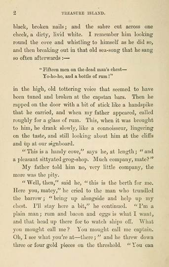
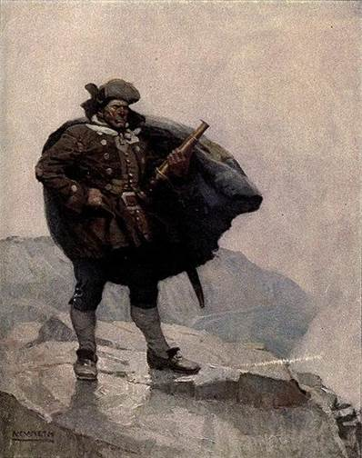
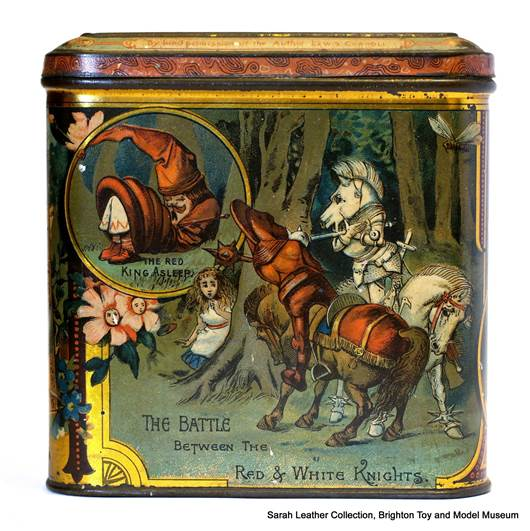
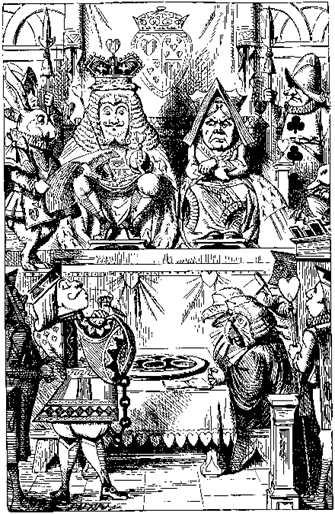
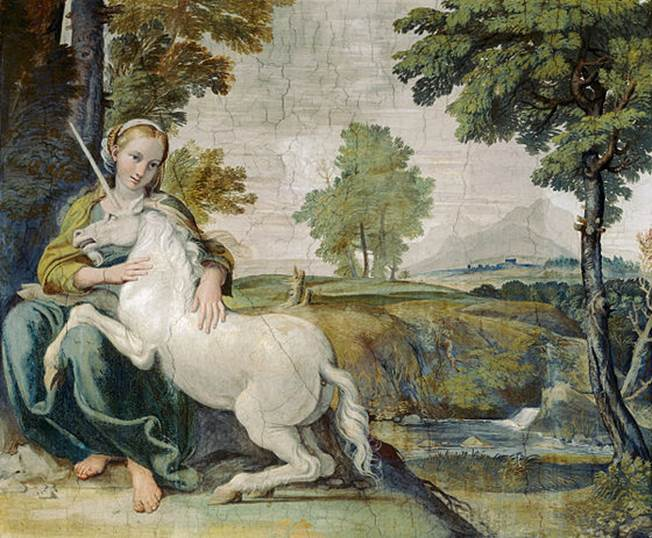
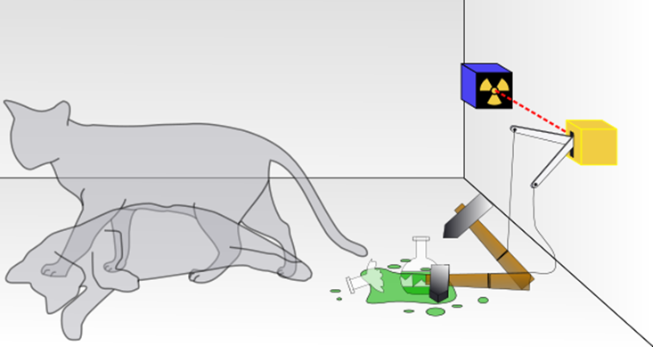
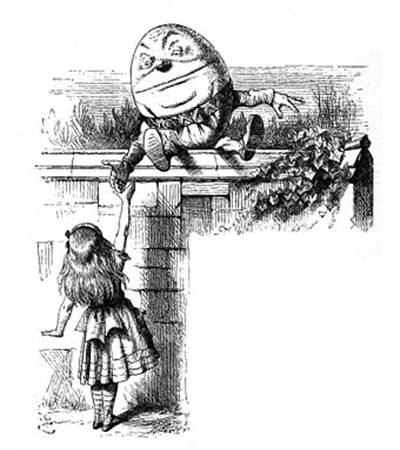
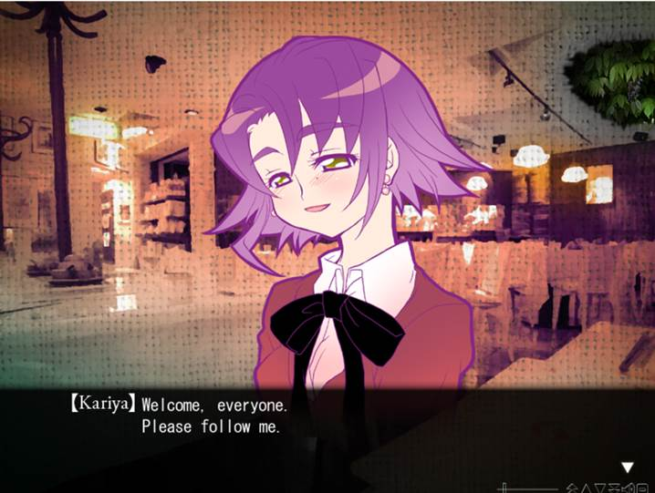

目录
Ø 海盗歌曲
Ø 四千人的军队
2. 剧情：
Ø 共通部分
Ø 分歧部分
Ø 其它
1. 出典：
² “Fifteen men on the dead man’s chest——
...Yo-ho-ho, and a bottle of rum!”
出自《金银岛》中的海盗歌曲“腐烂的桶”。
据说“dead man’s chest”在现实中是西印度群岛或波多黎各以南的一个小岛。 前者是一个小岛，没有水或树木，因此不可能生活在其中。 后者有树木和生物，但是没有任何东西将很难生活。

Figure 1. 金银岛中海盗歌曲的出处
² Bill Bones，Pirate’s death sentence
比尔·蓬斯在《金银岛》的开头首度登场，他带着一个大箱子入住吉姆·霍金斯父亲所开设的本鲍将军旅店，他只要求对方称他为“船长”，并支付不少的住宿费用。另外蓬斯还每月给吉姆四便士，要求他帮忙留意一个“只有一条腿的水手”。白天的大部分时间他总是在沿海的悬崖上行走。
过度酗酒的蓬斯每晚以讲故事、唱歌及咒骂人来恐吓旅店中的其他旅客，使吉姆的父亲感到十分困扰乃至因此病倒。但有部分当地人十分推崇蓬斯，还称其为“真正的老航海”。当年冬天，同是弗林特部下的海盗“黑狗”来到旅店找上蓬斯，两人爆发争吵及打斗，黑狗被赶走，但蓬斯随即中风倒地。李甫西大夫救下了蓬斯的生命，且在为他放血时从其臂上的刺青发现了他的真名。
之后蓬斯不理会李甫西的警告，依然继续酗酒，但身体明显变得衰弱。几日后，海盗之一的瞎子皮尤到达旅店，将“黑卷”交到蓬斯手中；蓬斯对此感到十分恐惧，不久后即中风死去。众海盗袭击了旅店以试图找到蓬斯持有的藏宝图，然而吉姆·霍金斯已带着藏宝图离去，并在后来展开了寻找宝岛宝藏的冒险。

Figure 2. 比尔·蓬斯
日本大赛（日语：日本選手権シリーズ），正式全名为职业棒球日本锦标系列赛（プロ野球日本選手権シリーズ試合），是指每年10月由日本职棒中央联盟（CL）和太平洋联盟（PL）的冠军队伍所举行的比赛，但2007年以后导入季后赛制度，由两联盟高潮系列赛胜出的球队争霸，胜出的队伍可以获得当年的“日本一”的称号。该系列赛曾于1950年至1953年根据大联盟的世界大赛称为日本世界大赛。
到2019年，央联与洋联以35胜35负的成绩战成平手。
Figure 3. 2019日本棒球总决赛标志
路易斯·卡罗，《爱丽丝漫游仙境》的作者，曾向玩具制造商Barringer, Wallis and Manners订购了300个经过特别设计的《镜之国的爱丽丝》的饼干盒，供刘易斯·卡洛尔（Lewis Carroll）赠送给朋友和家人。目前有部分饼干盒在英国的各大博物馆展出。

Figure 4. 英国玩具和模型博物馆中现存的饼干盒之一
出自《爱丽丝梦游仙境》最后两章的审判。爱丽丝到了审判的场所，红心骑士（Knave of Hearts）被控偷了红心王后的馅饼。陪审团由各种动物担任，包括蜥蜴比尔，白兔先生则担任喇叭手。在审判期间，爱丽丝发现自己愈长愈大，睡鼠（dormouse）说爱丽丝无权以这么快的速度长高，把他挤得喘不过气。爱丽丝回道睡鼠的控诉荒谬，因为每个人都会长大，而她自己没办法停下这个过程。同时，疯帽子和公爵夫人的厨师被传唤作证，当这两人的询问结束以后，爱丽丝被白兔先生传唤为下个证人。
爱丽丝被传为证人，当她站起来时因为长太大了而弄倒了陪审员席，国王只得命令审判暂停到陪审员回到席次上。国王和王后引用第42条规定：身高一英里以上者必须退出法庭，但爱丽丝否认并拒绝离开。最后，王后和爱丽丝在一阵争吵以后，下令砍掉爱丽丝的头，但爱丽丝并不怕，她认为他们只不过是纸牌。整副牌此时飞上天，又落到爱丽丝身上，爱丽丝正要挥去这些牌，却发现自己在河边醒来，头还枕在姐姐的腿上，姐姐正挥去爱丽丝脸上的枯叶。爱丽丝把这个梦告诉姐姐，然后先离去了，姐姐则一边想着爱丽丝的奇怪梦境，一边恍惚地睡着了。

Figure 5.《爱丽丝梦游仙境》中描绘审判场景的插图
² Potential Infinity
实无限和潜无限（actualinfinity and potential infinity）指数学上两种不同的无限观。
数学上的实无限思想是指：把无限的整体本身作为一个现成的单位，是已经构造完成了的东西，换言之，即是把无限对象看成为可以自我完成的过程或无穷整体。按照此观点，所有的自然数可以构成一个集合，因为可以将所有的自然数看做是一个完成了的无穷整体。康托的朴素集合论就是建立在实无穷的基础之上的。举个形象点的例子就是，一条线段上的点有无穷个，但是这条线段本身又是有限的。
数学上的潜无限思想是指：把无限看作永远在延伸着的，一种变化着成长着被不断产生出来的东西来解释。它永远处在构造中，永远完成不了，是潜在的，而不是实在。把无限看作为永远在延伸着的（即不断在创造着的永远完成不了的）过程。按照此观点，自然数不能构成为一个集合，因为这个集合是永远也完成不了的，它不能构成一个实在的整体，而是永远都在构造之中。举个形象点的例子就是，构成一条直线的点有无穷个，并且这条直线永远延伸着，不会有终结的一天。
从哲学上讲，从公元前400多年前开始就对无穷的观念产生了分歧，对于潜无穷与实无穷的无穷观之争一直延续至今。如果坚持潜无穷论，将导致一些与实际相矛盾的现象，并且数学上将导致现代数学失去大部分内容。当然坚持实无穷论，也会出现一些与日常知识不一致的方面(如整体大于部分将不再绝对成立)。基于哲学上对无穷不同认识的影响，数学中也始终存在着潜无穷与实无穷之争论。
游戏中提到的奥地利数学家库尔特·哥德尔（Godel）是主张实无限的著名人物。
独角兽传说起源，最早可能可以追溯到印度河流域文明。
底部雪白，中间乌黑，顶端鲜红，独角兽锐利的角有着奇异的魔力。从角上挫下来的粉末可以解百毒，服下粉末即可抵御疾病、百毒不侵，更能够起死回生。独角兽的血液也有治病、甚至起死回生的能力，不过传说只要喝下其血液，就等于玷污了这纯洁的生物，会得到诅咒，从今以后只能像行尸走肉般生活。魔力令人们对这只离奇的角发狂，每个贵族都想拥有独角兽角做的酒杯，每个猎人都妄想有朝一日独角兽落入他的陷阱。
在欧洲大陆的传说中，独角兽是纯洁的化身，更被苏格兰选为王室的象征，它有时被描绘成雌性，而其角具有解毒的作用。

Figure 6. 位于意大利罗马法尔内塞宫（Palazzo Farnese）内的一幅壁画，
中世纪的神话传说中，单纯善良的独角兽往往被处女所吸引。
结局3中出现的狮子（阿斯兰）与独角兽，出自《鹅妈妈》中的诗歌，原诗为：
|
The lion and the unicorn Were fighting for the crown The lion beat the unicorn All around the town.
Some gave them white bread, And some gave them brown; Some gave them plum cake and drummed them out of town. |
狮子和独角兽为了王冠战斗。 狮子把独角兽打得落花流水。
有的给他们白面包，有的给黑面包；有的给他们梅子蛋糕，有的赶他们出城去 |
狮子和独角兽还曾出现在《爱丽丝镜中奇遇记》中：一群士兵蜂拥的穿越树林跑来，不过这些士兵相当笨拙，不时就会跌倒。爱丽丝见到白国王，国王的盎格鲁萨克逊信使这时也出现并告诉国王狮子和独角兽正在打架。一行人于是到了打斗的地点，打斗却正好结束了。爱丽丝替狮子和独角兽切蛋糕，她照着独角兽的指示转一圈再切，响起的鼓声把他们打断，爱丽丝惊惶的跨过小溪。
在现实中，英国皇家徽章也有狮子和独角兽，狮子象征英格兰，而独角兽则象征苏格兰。 在历史上两方经常吵架和争斗。
Figure 7. 英国皇家徽章
薛定谔猫（英语：Schrödinger's Cat）是奥地利物理学者埃尔温·薛定谔于1935年提出的一个思想实验。通过这思想实验，薛定谔指出了应用量子力学的哥本哈根诠释于宏观物体会产生的问题，以及这问题与物理常识之间的矛盾。在这思想实验里，由于先前发生事件的随机性质，猫会处于生存与死亡的叠加态。[1]:317
根据退相干理论，猫不可能永远处于生存与死亡的叠加态，由于环境的影响，很快地会产生退相干效应，猫改而处于生存或死亡的经典统计学状态，因此，一般而言，绝对无法观察到这生存与死亡的叠加态。[2]:82至今为止，物理学者只能精心制备出一些介观物体的叠加态。
虽然这是个思想实验，类似原理已被研究与运用在实际应用领域。当理论研讨量子力学的诠释问题时，这思想实验也时常会被特别提出为试金石。
因为这个缘故，游戏中结局1、2中的柴郡猫吞下了必死的“黑卷”时才没有死亡。

Figure 8. 薛定谔的猫概念图
伽子临终前的话，出自《哈姆雷特》，哈姆雷特被毒剑所伤，临死前对朋友赫瑞修说的临终的话，“Horatio, I am dead.”，翻译过来就是“赫瑞修，我死了”。
² All the king’s soldier and all the king’s men
游戏的原句是“四千人的军队”，这句话首先是出自《鹅妈妈》中，矮胖子Humpty Dumpty的诗歌，原诗为：
|
Humpty Dumpty sat on a wall Humpty Dumpty had a great fall. All the king's horses, And all the king's men, Couldn't put Humpty together again.
|
矮胖子，坐墙头， 栽了一个大跟斗。 国王呀，齐兵马， 破镜难圆没办法。 |
另外也出自《爱丽丝镜中奇遇记》，这位矮胖子变成了蛋形。原文是：“当爱丽丝走到离它几步远的时候，她看到蛋上面有眼睛、鼻子和嘴。当更靠近时，她清楚地看到这就是著名的“矮胖子”了。”
在前面灰流和雨森的对话中，也提到了雨森身体内的“蛋”。

Figure 9. 《爱丽丝镜中奇遇记》中的矮胖子插画。
2. 剧情：
10月24日，第六章的一个月以后，Alice变回伽子回了家，被锁在了屋子里。她知道黛娜不会回来了。此时海盗闯入，他们在寻找Alice。伽子乘出租车带走了他们。
刈谷的餐厅里，（分歧点1）玛丽夫人对众人宣告最后一个谜题已经开始了，主题是寻宝，寻找森林的最后珍宝。雨森的高跟鞋坏了，灰流把她送回家。
伽子在出租车上被两个海盗夹在中间，途中她看到了灰流和雨森。伽子带两位海盗进入已故的餐厅，拿到了饼干盒，并从海盗手中逃脱。逃跑的过程中发生了枪战，玛利夫人和东京都知事展开了行动，最后伽子被逮捕。
随后，东京都知事主持森林的审判。因为伽子是未成年人（minor），所以庭审的过程给伽子进行了打码变声处理。庭审的过程中，（分歧点2）东京都知事谴责伽子是森林的叛徒。伽子辩称自己是爱丽丝，东京都知事说整个森林都在寻找爱丽丝，因为她是森林最后的宝藏，因此要求她拿出证据。Kako想拿到饼干盒，以此穿上爱丽丝的衣服。但东京都知事同时也指出爱丽丝也犯下了很多罪，并且以3、4、5章的顺序依次陈述：
1. 通过灰流带着的Plantir，东京都知事认定了爱丽丝犯有强奸罪。
2. Gloriana想要自己的霸权稳定，横竖给伽子判死刑。
3. 戴手表的白兔出现（口癖是要迟到了），要求爱丽丝对The Game中Jabberwock早成的巨大死伤进行赔偿。
东京都知事等衣服的时候，问旁听席森林的珍宝是什么，雨森宣称是永恒森林的全部，而灰流和伽子进行了反驳。东京都知事拿到了衣服，但是伽子不想穿上了。东京都知事厉声警告，说背叛Forest的人都不会有好下场，她还揭露了伽子只是爱丽丝的扮演者这个事实（详见下一章），不想扮演爱丽丝的话，伽子就只有死路一条。
伽子选择反抗，她召唤黑骑士杀掉了东京都知事，并且乘独角兽逃跑。（分歧点3）众人追击到了新宿时钟塔。灰流最先找到了伽子。伽子接受了自己将死的命运，临死前和灰流H，让自己作为人类死去，作为对自己“角色”命运的最大抗争。
伽子死亡后，灰流把她的衣服穿了回去，雨森到达，在和灰流争执一番后跳楼，爱丽丝重生，第七章结束。
第七章有3个分歧点，刈谷餐厅的汇合与枪战，伽子的审判，以及追击逃跑伽子的过程。这3个地方可以被以下之前游戏的选项所影响：
❏ 第四章最后的Bring her back/Let her rest选项，如果选择了召唤Tinker，则在第七章最后，爱丽丝重生之前，会有无法回避的BE。
❏ 第五章开始的九月/黛选项，如果选了黛，在第七章最后，爱丽丝重生之前的相同位置，会有无法回避的BE。
❏ 第六章的5个不同结局，会给第七章的剧情带来很大变化。
确定第四章和第五章的选项正确的情况下，我们先讨论第六章五个结局带来的剧情分歧：
 结局1和结局2：
结局1和结局2：
视角转入刈谷的餐厅，现在有别人接管了这家餐厅。
除了刈谷之外的其他主角都在，黛开始为不见的刈谷即兴演唱凯尔特式的怀旧歌曲，所有人都看到了黛心态的转变。现在的黛乐观，坦率且热血。
审判的时候，黛想叫奥博隆（彼得潘）但是被九月阻止。柴郡猫带领众人追击伽子，并吞下了可能致死的black spot，因为薛定谔的猫的缘故而没有死亡。
 结局3：
结局3：
刈谷的餐厅将要转手，这是她最后一次招待众人来餐厅。众人吃了意大利餐，雨森喝醉了。刈谷为两人打了一辆车。
伽子到餐厅的时候，刈谷眼尖发现了伽子，认出了她是黑爱丽丝，并通知了在出租车上的灰流。在海盗和纸牌士兵的枪战中，雨森被枪击击中，阿斯兰带着独角兽出现，灰流用独角兽的角治好了雨森。
审判和追击的时候会多一些刈谷的话，但是结局不变。

Figure 9. 刈谷的笑容
 结局4：
结局4：
有人接管了这家餐厅，主角5人在餐厅吃饭，黛还在海狸那里睡着，不出现于后面的审判过程。枪战的经过和结局1、2的版本类似。
审判的过程中，戴手表的白兔会解释变成树的黛的事（详见下一章）。
 结局5：
结局5：
在通过前面不同的剧情之后，结局5就没有新的东西了，从第七章开头可以直接跳到Standstill的开头。
 第四章选Bring
him back：
第四章选Bring
him back：
Gloriana在作证时的发言会有些许不同，在时钟塔下tinker和彼得潘会来找雨森的麻烦。
 第五章选黛：
第五章选黛：
庭审中雨森对爱丽丝说，她在The Game里是凭自己的一直召唤出的怪物Jabberwock
 以灰流的判断，故事在第七章开头大概就像一本366页的书，翻到了还剩60多页，也就是大概进行到了5/6的位置，但是还没有到高潮。
以灰流的判断，故事在第七章开头大概就像一本366页的书，翻到了还剩60多页，也就是大概进行到了5/6的位置，但是还没有到高潮。
 从玛丽夫人的话可以得知，伽子实际上是藏宝图，不是宝藏本身。森林的唯一宝藏是死亡。
从玛丽夫人的话可以得知，伽子实际上是藏宝图，不是宝藏本身。森林的唯一宝藏是死亡。
 雨森在爬楼梯的时候，念的是Story
of the Beginning X里（详见文件32），Helmai在人偶Peccolia吃下橘子，变成真正的人时候念的诗。所以雨森其实迫切希望的是伽子能够成为真正的人类，而不是森林所创造的“角色”。
雨森在爬楼梯的时候，念的是Story
of the Beginning X里（详见文件32），Helmai在人偶Peccolia吃下橘子，变成真正的人时候念的诗。所以雨森其实迫切希望的是伽子能够成为真正的人类，而不是森林所创造的“角色”。
 雨森不会关手机，于是直接把手机递给了灰流（对应第一章雨森不会用手机的描述）。
雨森不会关手机，于是直接把手机递给了灰流（对应第一章雨森不会用手机的描述）。
3. 翻译：
A perfect story.
That’s what the Witch Amamori wanted.
一个完美的故事，这是魔女Amamori想要的。
The forest had a will of its own. Everything had a meaning.
There was an ideal conclusion. Or so she thought.
森林有自己的意志。一切事物都有着它们的含义。一定会有一个完美的结论。至少她是这么想的。
But Sensei denied that.
"Everything’s a coincidence.There’s no meaning and no will behind it.”
但是老师（灰流）否定了这个观点。
“一切都是巧合。在其背后并没有任何含义或意志。
The Witch Amamori is an Original. She gave birth to this forest.
魔女Amamori是创始者，她生出了这个森林。
But Sensei’s an Original too. The nameless wise man.
但是老师也是一个创始者。一位无名贤者。
The Witch Amamori and the nameless wise man.
The two Originals are saying completely different things.
雨森和无名贤者，两位创始者在说着截然相反的事。
Which of them are right? Are they both wrong?
他们之中谁是对的？他们都错了吗？
² 灰流在刈谷餐厅中说的话：
The problems is, I don’t like butting into other people’s lives.
There’s nothing I can do besides leave them alone.
问题是，我不喜欢闯进别人的人生，
因为除了袖手旁观之外，我没有其它的事情可做。
If you want stupid, dimwitted, unthinking people as your “friends”,
You can get hundreds of them in minutes. That’s kinda nice, in a way.
如果你想结交愚蠢的、不为他人考虑的人做你的“朋友”，你可以在一分钟内交到无数个。某种程度上这算是一件好事。
If you’re fine with that then go right ahead.
Maybe you’ll say, “I was happy my whole life”.
But I could never do that.
如果你觉得这样正好那就随意。也许你会说，“我这一生都很幸福。”
但是这对我来说是不可能的。
They look the way they do in the garden, but their minds and memories are still those of real people. And they’re moving through reality in that state.
他们像是在庭院中的做派，但是他们的意识和记忆都是属于现实中的人类的。谜语就是在这种情况下进行着的。
They were looking for Alice, but they probably didn’t know why.
In fact they might not know who she is.
他们在寻找爱丽丝，但是他们并不清楚理由，甚至不知道她是谁。
（类似雷普契普向东航行的愿望）
But I'm an Original. I'm this world's Mama.But I failed.
（雨）我是创始者，是这个世界的妈妈，但是我失败了。
Stop.
（灰）停下。
I couldn’t give birth to it. Is this world a ghost?
Hey, Sensei, are we even alive?
（雨）我没法生下它（寻找名字魔女的故事）。这个世界是幽灵吗？
老师，我们还活着吗？
Of course.
（灰）当然。
Really? If this world is someone’s dream, Then we might be dreams too.
（雨）真的？如果这个世界是某个人的梦想，
那么我们可能也在梦中。
At least be more creative than that……
（灰）至少说点更新奇的东西啊……
I had no idea Amamori was bothered by this.
Still, she’s gotten pretty strong……
（灰）我没想到雨森会这么困扰。但是，她依旧变坚强了……
A long time ago, she would’ve just curled up in the corner, never speaking, never eating, never blinking, fleeing away to her dreams.
（灰）很久以前，她说不定早就蜷缩在墙角里，
不说话，不吃饭，不眨眼地逃入她的梦中。
As Amamori shivered in my arms, I could feel her slightly cold,
Smooth skin with just the right amount of tension——
（灰）雨森的身体在我的手臂中发抖着，我能够感到她略微冰冷，
具有适度弹性的光滑皮肤——
Her heart was like building blocks, always falling down after you try piling them up. But it was also unbelievably beautiful.
（灰）她的心就像总是堆起来又倒塌的积木一样，
但是这是一颗难以置信的美丽的心。
Half a year ago.That was the first time I laid with her.
Ever since then, I’ve been crazy.
（灰）半年前，我第一次抱了那个身体，
自那时起，我就变得奇怪了。
I want to make her happy. But how could someone like me do that?
God dammit. Why? I need to stop dreaming about the impossible.
（灰）我想让这家伙幸福。但是像我这样的人怎么配得上她？
畜生。不能做这种不切实际的梦啊。
Alice is the forest’s final treasure. But only if I become Alice.
I’m the only one who can do that, right?
爱丽丝是森林的最后宝藏。但是那也得是我成为爱丽丝的前提下。
除我以外的人不行吧？
You still don’t know who I am?
I’m Miyano Kako! With the curse of immortality!
I’m sick of hearing death sentences!
还不明白我是谁？我是得了不治之症的宫乃伽子！（这里英译有误）
我已经厌倦了死刑宣判！
I understand now. Alice is the girl with the curse of immortality.
A curse of eternal loneliness——
我已经明白了，爱丽丝是身体承受了不死之症的女孩，
同时也承受了永恒的孤独——
Reality crumbles apart at the speed of light. Stories live on. True stories.
They surpass time, and live on forever——
现实以光速灭亡。而故事能够存活下来。
真正的故事，能够随着时间的流逝，永远留存下来——
Stories can't survive as mere stories!
There are other conditions!
（灰）故事不可能单凭故事就能幸存！需要其它条件！
There need to be storytellers. There need to be listeners.
That’s all it takes for stories to continue.
只需要讲故事的人和倾听者，故事，就能继续。
But I know now! That’s a curse. A curse with no end.
I’m a servant of the forest, master of the garden——
但是，我明白了！那是一个诅咒，没有结束的诅咒。
我是森林的仆人，庭院的主人。
Princess of the riddles, the Black Alice!
My body bears the curse of immortality!
I wander alone, all by myself!
谜语的公主，黑爱丽丝！我的身体得了不死之症。
我一个人徘徊在这世间，一个人，独自一人！
Me and only me! For all eternity!
I can’t bear this burden!
只有我一个人！永恒！这是我不能背负的重担！
That’s why there are two Originals.
The teller and the listener are both creators.
They need to continue that eternal cycle.
这也是为什么创始者有两个人。讲故事的人，和倾听者都是创造者。
为了让永恒的循环能够继续。
But I’m all alone.
I’ve always been alone, and I always will be.
I’m just bait for the traps.
但是我一个人，从一开始，就是独自一个人。我的角色是陷阱。
I'm a trap meant to drag the nameless wise man and the Witch Amamori into the forest!
无名贤者！魔女Amamori！我是把他们拖入森林中的陷阱！
I’m fine with that! Let’s see how well I do!
I am Alice! I’ll become Alice!
好啊！看我做的多好！我是爱丽丝！我将成为爱丽丝！
"Become" her? So pitful.
Is that the best answer you could come up with?
（东）“成为”她？真是可怜。这就是你能想到的最好答案？
You can’t fool me!
You’re another trap, another pawn of the forest!
Haha! That makes us friends, doesn’t it?
（伽）我不会上当的！你是另外一个陷阱，另一个森林的走卒！
哈哈！我们可以做个朋友吧？
Don’t underestimate me!
I was born! And the forest took me in later!
（东）别小看我！我出生了！
然后森林才把我带走的！
You’re different! Miyano Kako, with your grand name, your affluent family,
all of it is so well-put together!
（伽）你是不同的！宫乃伽子，很夸张的名字，
非常棒的家庭，一切设置得如此完美！
What are you saying? Are you calling me a fake?
（东）你说什么？想叫我冒牌货？
You’re real! The one and only Miyano Kako!
The genuine doll the forest made!
（伽）你是真的！你是真正的宫乃伽子！
森林制作的名副其实的人偶！
Eh……？
（伽）哎……？
You think “Kako became Alice,” don’t you?
That Miyano Kako was taken in by the forest——
（东）你是这样想的吧，“伽子成为了爱丽丝”，
伽子是被森林带走的——
But that’s backwards. Alice was pretending to be Kako.
And that’s how she laid traps.
（东）然而事实恰恰相反，爱丽丝成为了宫乃伽子，
她是这样张开的陷阱。
Miyano Kako never existed in the first place.
There was just Alice. Alice and the forest.
Then, to draw in the Originals——
（东）宫乃伽子从一开始就不存在。就只有爱丽丝，爱丽丝和森林。
然后，为了吸引两位创始者——
She laid a trap.
And that was you, Miyano Kako.
（东）她制作了陷阱。然后那个人是你，宫乃伽子。
I'm real!
（伽）我，是真实的！！
You don’t think those are real tears, do you?
（东）你不认为那是真实的眼泪，对吗？
You’re so cruel……
（伽）好过分……
It’s your own fault. I gave you a chance, didn’t I?
A chance to “become” Alice?
（东）这是你的自作自受。我给过你机会了。
一个“成为”爱丽丝的机会？
If you can’t turn your whole body and heart into Alice, you’re no good!
Do you understand now, Miyano Kako-san?
（东）如果你不能把全身心都变成爱丽丝，那就不行!
你现在懂了吗？宫乃伽子？
If you understand that, then die nobly!
Miyano Kako must die! The fake doll must die! Then Alice will remain!
（东）如果懂了，那么就清白的死去！
宫乃伽子必须死去。虚假的人偶！这样爱丽丝就能留存！
No, I don't want to die!
（伽）不，我不想死！
Don’t struggle! You’ll die either way!
You don’t have long left to leave with your curse!
That’s just Miyano Kako’s character!
（东）不要挣扎！你怎么样都会死！你在不治之症下活不了多久的！
这就是“宫乃伽子”的“角色”！
I don’t want to die!
I don't want to die!
（伽）我不想死！我不想死！
If you don’t wanna die then you have no choice but to become Alice!
Miyano Kako was born from Alice!
（东）如果你不想死那就成为爱丽丝！
宫乃伽子是从爱丽丝那里出生的！
Sensei, please tell me.
If there’s a world “outside” of us——
（雨）老师，请告诉我。如果有一个世界在我们“外面”——
Then is there a world "inside" us as well?
（雨）那么，在我们的世界“中”，也会有这样的世界吗？
Amamori——
（灰）Amamori——
We gave birth to the forest. No, maybe we just found it.
And I touched “eternity”——
（雨）我们生出了这片森林。不，没准只是发现了它。
然后，我接触到了“永恒”——
But Sensei, you rejected it. You denied eternity.
（雨）但是老师，你拒绝了，你否定了永恒。
"The hell of infinity"—— That’s what you said.
I want to escape. I want to go beyond this world now.
（雨）“无限的地狱”——老师您是这样说的。
我想要逃脱，我想走出这样的世界。
I think we “broke” something.
But the hold in the world isn’t big enough to escape through.
Instead it’s letting things come “in” from “outside”.
（雨）我认为我们“打破了”什么，但是这个世界的裂缝太小，
并不能称为出口。它反而让故事从“外面”进入到了“里面”。
This is the forest. It’s changed, but it’s that same forest.
And it’s still incomplete.
（雨）这就是森林，虽然变质了，但是依旧是那片同样的森林，
依旧是不完全的世界——
And “inside” of me—— Sensei? Hey, answer me.
I’m sure there’s a "world"——
（雨）然后在我的体“内”——老师？呐，回答我。
我觉得一定有一个“世界”——
There is. But it’s only an "egg". A chance for a world to be born.
（灰）对。可那只是一个“蛋”，
是一个“新世界”产生的“契机”。
I see——
（雨）我明白了——
Hey, Sensei, is it a complete world? A world with no sadness?
（雨）呐，老师？那里是一个完美的世界？一个没有悲伤的世界？
That’s just a dream. A bad dream.
（灰）那只是一个梦想。一个很坏的梦。
How can you say that? You don’t even know what it’s like.
That's right, we have to try and find out——
（雨）你怎么能这么说？你根本不知道它是什么样子的。
对啊，不试一下怎么会知道——
Amamori Nozomi stepped into the air——
Kinosaki Akeru screamed——
雨森望向虚空踏出了一步——灰流大声喊——
You’ll break into pieces!
Not even all the king’s soldiers and all the king’s men ca——
（灰）你会摔成碎片的！
即使有四千名士兵也——
That’s so old.
（雨）好老的故事。
I wonder if I'm still fresh——
（雨）我，还是新鲜的吗—— （雨森跳楼）
She fell on her butt and ended up sitting down with her hands over her chest, still clutching her sword——
咚的一声，雨森屁股落地，并用保持双手握剑的姿势，摁住胸口——
Light poured out. The dog star Sirius leaped out of the bullet wound.
He held the bullet in his teeth.
从伤口中溢出了，光。星犬小天狼星从枪伤中跳了出来，嘴里叼着子弹。
Amamori slowly fell forward and her sword pierced the ground and light dripped out from her bullet wound, but……
雨森慢慢地向前倒了下去，剑尖穿透了地板，
光持续地从她的伤口中涌出。
Peccólia jumped out and started dancing.
We could hear Torunga’s cursing, and Helmai’s snickering——
Peccólia跳了出来，开始舞蹈。
我还能听到Torunga骂人的声音，以及Heimai的窃笑——
Amamori……
Amamori……
I went up to her and felt the heat of her wound. Energy poured out of it.
I pushed and pushed on it but the poem wouldn’t stop.
我能明显感到她的伤口传来的热量。能量从中不断溢出。
即使我一直按住伤口，也不能让这些诗歌停下。
Amamori. Can you hear it? Amamori.
Amamori，能听到吗？Amamori.
Sensei…… I forgot. I’m not immortal.
老师……我忘记了，我不是不死之身。
² 结局3黛看到了终章的片段：
I remember!
In my dream there was one, only one dream I don't know the ending to.
我想起来了！在我看过的梦中，只有一个是不明白结果的梦。
I’m certain it led outside the word.
To a new land far removed from the world we live in——！
我很确定那个梦能都到达世界的外面，
我们在远离这个世界的，新的世界！
² 结局4刈谷向白兔询问黛变成树的事：
Yes, Mayuzumi Kaoru-san. She became a tree.
Just like the people taken in by the forest. But unlike the others——
（刈）是的，黛薰成为了一棵树，和被带入森林的其他人一样。
但不同的是——
Mayuzumi-san was a world tree.
All the time flow into her, and all stories grew out of her.
（刈）黛是一棵世界树，全部的时间都流进了她的身体，
所有的故事都从她身上传播开来。
Does she have memories of that?
All the memories from the beginning to end?
（刈）黛就是一个世界本身。她是否拥有记忆？
Dunno, it’s not my field of expertise. But I’ve heard rumors.
Apparently that world tree bore fruit.
（兔）不清楚，这在我的专业领域之外。
但是我听到过传闻，世界树，似乎能结出果实。
It was a very pretty red crystal, so she must have nice dreams.
I’m sure she was happy.
（兔）那是非常漂亮的红色结晶，她应该做着一个相当美好的梦。
我能确定她非常幸福。
 I've
known her for a very long time.
I've
known her for a very long time.
（灰流）我在她（雨森）很小的时候就认识她了。
 "Characters"
who go outside their "roles"
get bent back into place
"Characters"
who go outside their "roles"
get bent back into place
by the “story”. There’s nothing unusual about it.
脱离“职责”的“角色”会被故事强行拉回来。
这不是什么新奇的事。
The fact that I'm running from "death" right now dows line up with my "character", but I still think I'm out of control.
现在，我逃离“死亡”的行为和我的“角色”相匹配，
但是我仍然认为我正在“暴走”。
 The
girl intends to outrun her destiny!
The
girl intends to outrun her destiny!
（Gloriana）那个自作聪明的小姑娘想超越自己的命运！
 I’m
the one who’s become worthless.
I’m
the one who’s become worthless.
Miyano Kako, a pseudo-heronie, a trap. A badly-written story——
我已经失去价值了，宫乃伽子，虚伪的女主角，一个陷阱，
一个写得很差的故事——
 I’m
Alice. Princess of the riddles.
I’m
Alice. Princess of the riddles.
The gamemaster who sets up the riddles.
我是爱丽丝，谜语的公主，设置谜题的游戏主人。
 Kinosaki
Akeru’s mask broke.
Kinosaki
Akeru’s mask broke.
His handsome, cool, composed, confident face twisted.
城之崎灰流的面具破碎了，他英俊，冷酷，故作镇定的脸扭曲了。
 Calling
Amenomori-san is part of my duty.
Calling
Amenomori-san is part of my duty.
叫来雨森（续章中的剧情）也是我的使命。
 I
thought there was only one treasure.
I
thought there was only one treasure.
Everyone has their own wishes, but I thought there was one truth surpass them all——
我认为宝藏只有一个。每个人都有他们自己的希望，但是只有一样可以超越他们全部的真实——
Do you understand, Sensei?
It's death.
明白吗，老师？是“死亡”。
 The
witch in the story. One of her countless names.
The
witch in the story. One of her countless names.
Hey, does that mean her name is——
故事中的魔女，拥有无数名字的人，难道那个她的名字也是——
That’s right, she’s Amamori. She always has been.
She likes that name better.
没错，她是另一个Amamori，一直都是。
对雨森来说，那样让她比较开心。
 But
I’m a “character”. I can abandon my name, but not my role.
But
I’m a “character”. I can abandon my name, but not my role.
I have to accept that.
但是我是“角色”，即使能丢掉名字，也不能丢掉自己的职能，只能接受。
Miyano Kako cursed with immortality.
She was born to die and give her place to the Black Alice,
also cursed with immortality. When I die, Alice will be born.
患有不治之症的宫乃伽子为了死亡而出生，给患有不死之症的黑爱丽丝让出位置。如果我死去，爱丽丝将会出生。